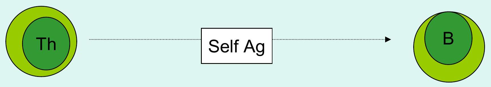
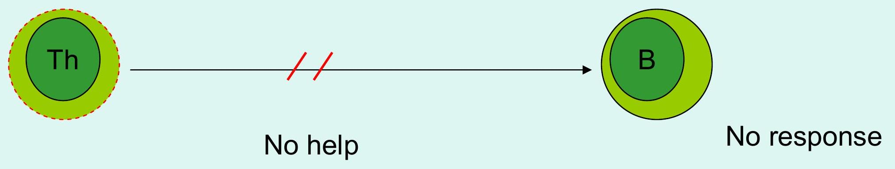

IMMUNOLOGICAL TOLERANCE
Outline
- Definition
- Types of tolerance
- Central Tolerance
- Peripheral Tolerance
- T cell tolerance
- B cell tolerance
- Maintenance of tolerance
Tolerance Overview Diagrams
IMMUNOLOGICAL TOLERANCE Definition
A state of specific immunological unresponsiveness to self Ag
Types of Tolerance
- Central Tolerance carried out during fetal development in the PRIMARY LYMPHOID ORGANS
- Thymus for T cells
- Bone marrow & fetal liver for B cells
- Peripheral Tolerance, operates in the SECONDARY LYMPHOID ORGANS, in the periphery after birth
HAEMATOPOIESIS
Stem cell
ROUTES TO TOLERANCE
ROUTES TO T CELL TOLERANCE
I. CENTRAL TOLERANCE
CLONAL DELETION
Takes place following LYMPHOPOIESIS in a specialized organ, the thymus.
- The thymus is composed of several lobes, each of which has cortical and medullary regions:
- The cortex contains immature thymocytes in close contact with thymic epithelial cells.
- Medullary areas contain more mature thymocytes, epithelial cells, and dendritic cells and macrophages
Arrival in the Thymus
Positive Selection in the thymic cortex
Negative Selection in the thymic medulla
Thymic development of T cells results in:
- Production of T cell receptors for antigen (TCR)
- Lymphocytes begin to express CD3, CD4, and CD8
- Selection of T cells that can interact effectively with self-MHC - Positive selection
- Elimination of self-reactive cells that are stimulated by MHC + self Ag - Negative selection
- Mature T cells ready to go to the periphery are TCR/CD3+, and either CD4 or CD8 positive
CLONAL DELETION (Summary)
Physical deletion/elimination of T cells that have receptors specific for self antigens from the peripheral repertoire
Self-reactive T cells escape to the periphery and are controlled by Anergy.
II. PERIPHERAL TOLERANCE
-CLONAL ANERGY
Down regulation of the mechanism of response
-INHIBITION OF T CELLS
Continuous inhibition of cellular activity by suppressor cells, Ts (via IL-10, TGF-$\beta$)
Routes to B cell Tolerance
Central Tolerance
Clonal Deletion Physical deletion/elimination of B cells from the peripheral repertoire
Peripheral Tolerance
- Direct- Clonal Anergy Down regulation of the mechanism of response
 No response - Indirect- No Help from Th

HOW IS SELF-TOLERANCE MAINTAINED?
- Clonal Deletion or Anergy - Autoreactive lymphocytes are deleted or are non-functional
- Sequestration of Autoantigens - Self-Ag are isolated/hidden from immune system
- Lack of Processing or Presentation - Self-Ag are not processed or presented
- Suppression - Ts cells suppress autoimmune responses.